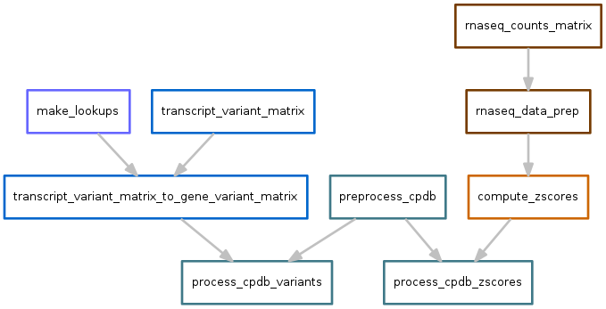
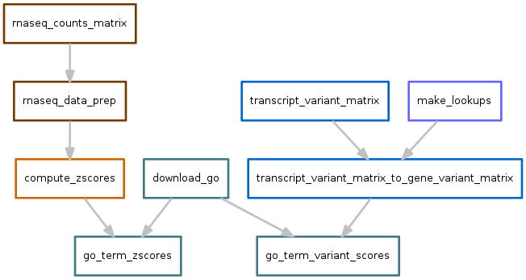
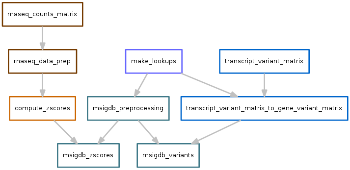

P3 features¶
While the pipeline is generic enough to support arbitrary numbers of arbitrary features, here we describe the actual features used. This section can be used as a starting point for creating custom sets of features for other types of data.
Each set of features requires a different set of pre-processing steps. To
accommodate this, and to isolate the customization into discrete,
easily-editable components, features are handled by separate workflows. In some
cases, the workflows are interdepedent on each other. Each workflow is expected to
create the output files defined in the config.yaml file.
Below, each sub-workflow is shown separately as a directed acyclic graph (DAG) of the tasks performed and the first few lines of the output file (or files) are shown. To illustrate interdepdencies among workflows, sub-workflows have been color coded.
runall.snakefile
{kind=link}
norm_counts.snakefile¶
This workflow starts with htseq-count files, one for each sample. They have the following format:
The workflow is the following:
The output file of norm_counts.snakefile is a table of gene-level
quantile-normalized counts per million (CPM). One row per gene, and one column
per sample:
zscores.snakefile¶
This workflow takes the output of norm_counts.snakefile and converts counts into zscores. In the absence of matched controls, these zscores are then used as a proxy for direction and magnitude of differential expression.
Output looks like this:
variants.snakefile¶
Todo
Need more methods here about how the original data files were processed.
The starting point of the exome variant data are tab-delimited files, one for each sample, generated by running SnpEff on VCF files, performing filtering steps to exclude likely germline mutations, and excluding the VCF header:
#CHROM POS ID REF ALT 1000G COSMIC DB NHLBI EFF[*].EFFECT EFF[*].IMPACT EFF[*].FUNCLASS EFF[*].CODON EFF[*].AA EFF[*].AA_LEN EFF[*].GENE EFF[*].BIOTYPE EFF[*].CODING EFF[*].TRID EFF[*].RANK GEN[0].AD[0] GEN[0].AD[1] GEN[0].DP
6 30994026 . C C . . . . NON_SYNONYMOUS_CODING MODERATE MISSENSE . . . MUC22 protein_coding CODING ENST00000561890 . . . .
7 129825046 . G T . . . . CODON_CHANGE_PLUS_CODON_DELETION MODERATE . . . . TMEM209 protein_coding CODING ENST00000397622 . . . .
12 72070805 . G C . . . . NON_SYNONYMOUS_CODING MODERATE MISSENSE . . . THAP2 protein_coding CODING ENST00000308086 . . . .
19 58514095 . A TGCC . . . . CODON_INSERTION MODERATE . . . . CTD-2368P22.1 protein_coding CODING ENST00000550135 . . . .
SnpEff reports effects on a per-transcript basis. For integration with other features that consider genes (i.e., the pathway features), after collecting samples into a transcripts x sample matrix, we aggregate into a gene x sample matrix by summing variants across all transcripts of a gene.
Output of the gene x sample matrix looks like this, where values indicate the total number of variants across a gene in a sample.
Specifically, since the variants in these files have been pre-filtered to only contain those with high impact, the value for each gene represents the total number of rows in the VCF file annotated with transcript IDs (EFF[*].TRID column) belonging to that gene.
cnv.snakefile¶
The copy number variation (CNV) data starts as files in SEG format for each sample. For example:
ID chrom loc.start loc.end num.mark seg.mean
LineA_1 1 564454 746638 1594 0.0155
LineA_1 1 752741 12846964 1205 0.3181
LineA_1 1 12866220 12912597 8 -0.554
LineA_1 1 12917433 22050665 3 -4.111
Todo
Need methods on how the SEG files were created
Since each sample may have a different set of CNVs, the total number of unique CNVs across all samples must be determined. The multiinter program from the BEDTools suite is used to identify a uniform set of segments that can be used across all samples.
This uniform set of segments is then intersected with the actual segments on a per-sample basis to obtain per-sample CNV values for each segment. Files across samples are then aggregated into a single “cluster matrix” file.
This diagram shows how cluster scores are calculated for a hypothetical set of 3 samples:
A separate set of scores is calculated at the gene level. A score for each gene can be calculated in several ways. The following diagram shows two ways: the largest magnitude CNV that overlaps the gene (“max”), or the score of the longest segment that overlaps the gene (“longest”):
The final cluster scores output file looks like the following:
And the “max” gene scores:
And the “longest” gene scores:
Pathways¶
Several annotation databases are used. These databases have annotations for each gene in a gene x annotation file. However, the features need to be in a annotation x samples file for use with regression methods. Therefore these pathway workflows use different strategies to calculate a pathway score for each sample, based on some property or properties of the genes for that pathway in that sample.
See Obtaining pathway scores for more details.
In the pathway workflows below, there are several “flavors” of scores, each of which are derived from workflows described above. For example, there are scores derived from zscores, variants, and CNV data.
Consensus pathway database¶
Scores for each pathway are calculated based on the output of variants.snakefile and zscores.snakefile.
Variants output file:
Zscores output file:
Gene ontology¶
Scores for each GO term are calculated based on the output of variants.snakefile and zscores.snakefile.
Variants output file:
Zscores output file:
MSIG database¶
Scores for each pathway are calculated based on the output of variants.snakefile and zscores.snakefile.
Variants output file:
Zscores output file: